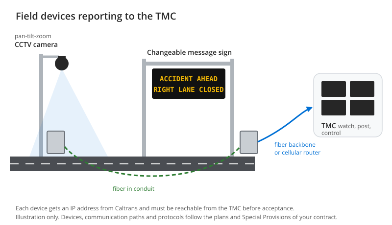

CCTV cameras and video
In one sentence: CCTV cameras let the Traffic Management Center see incidents and conditions live and react.

Main parts
| Part | What it does |
|---|---|
| Camera (PTZ or fixed) | Pan-tilt-zoom cameras are remotely controlled; fixed cameras watch one view |
| CCTV pole and mount | Raises the camera for a clear view. See Foundations: cabinet, pole and sign |
| Video encoder (if needed) | Converts video to network streams for older or analog cameras |
| Network equipment | Switch, fiber or cellular router back to the TMC. See Network equipment: switches, routers, SFPs and cellular |
| Surge protection | On power and data at the pole. See Surge protection |
| Power | Utility service or solar. See Solar power and LiFePO4 batteries |
Setup
Cameras get IP addresses and settings from Caltrans, are added to the TMC's video system, and are aimed and given preset views.
Testing
Caltrans checks it can see the stream, control pan-tilt-zoom, and recall presets. See Phase 9: System testing.
PM notes
Confirm camera model, video format and TMC software compatibility at submittal time. A camera the TMC can't read is a failed test.
Common mistakes / what Caltrans actually checks
- Camera model not compatible with the TMC software.
- Unprotected data cable up the pole.
- Presets not set before the witness test.